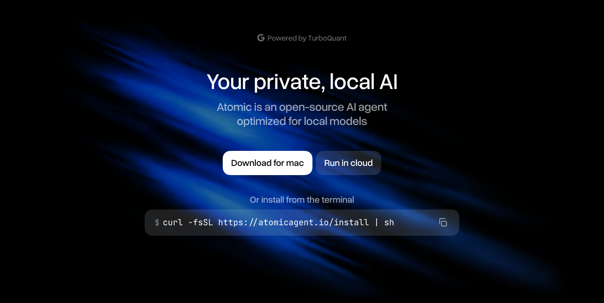
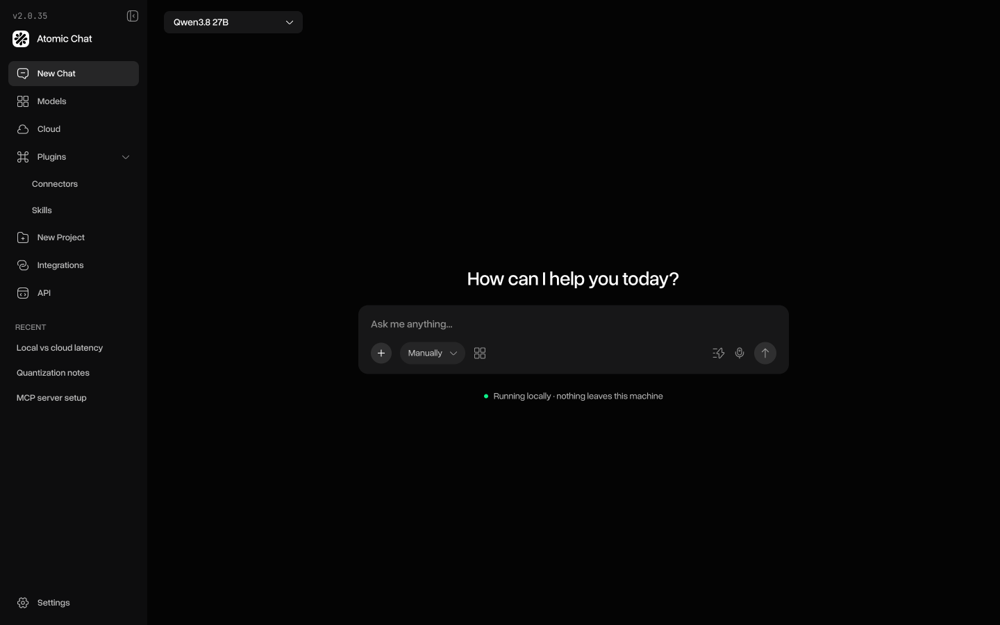

Промежуточный показ
Семь слайдов для КТ1. На адаптивах показаны крупные фрагменты.
Лендинг и рабочий интерфейс. От скачивания до первого диалога.

Переключайте версии и прокручивайте макет внутри окна. Кнопка «Увеличить» открывает экран поверх страницы.
На телефоне разделы открываются через меню. Отдельный экран показывает его раскрытое состояние.
Заголовки и пояснения перестраиваются под ширину. Их можно сравнить на одном и том же участке страницы.
Кнопка скачивания остаётся на первом экране во всех версиях. Ниже можно выбрать платформу.
Откройте нужное состояние. В увеличении можно рассмотреть подписи и кнопки.

Семь слайдов для КТ1. На адаптивах показаны крупные фрагменты.
Две главы, заключение, 22 источника и приложения.
Проект разработан Константином Даровским для Boiler Lab. Лендинг подготовлен по запросу заказчика, затем диплом расширен доработкой интерфейса существующего приложения. К первому показу готовы макеты и прототип. На обсуждении предстоит уточнить замечания преподавателя.
Исходные макеты в Figma ↗